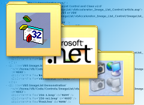

siteIndex (96K)
siteIndex (96K)
 10 Apr 2003
10 Apr 2003
Site Index XML now online

Complete Site Index in XML
This article provides the vbAccelerator Site Index in XML format. The index can be used for locating articles and downloads, including the download contents and can be used for site linking purposes.
The Site Index Schema
The schema for the index xml document contains four elements:
- The ArticleList element is the root element of the document.
- ArticleList contains 0 or more Article elements, which specify the title and location of an article.
- An Article can have 0 or more Zip elements for each associated download for the article.
- Each Zip element contains 1 or more ZipContent elements, which specify the names of the file within the download.
An excerpt from the Site Index xml file is given here:
<ArticleList site="http://vbaccelerator.com/">
<Article
id="2"
title="vbAccelerator ImageList Control and Class v2.0"
href="/home/VB/Code/Controls/ImageList/vbAccelerator_Image_List_Control/article.asp">
<Zip
title="ImageList Class Example, VB5 or VB6"
href="/home/VB/Code/Controls/ImageList/
vbAccelerator_Image_List_Control/ImageList_Class_Example__VB5_or_VB6.asp"
id="35">
<ZipContentFile file="256-1.bmp" id="36" />
<ZipContentFile file="pImageListClass.exe" id="37" />
<ZipContentFile file="testils.res" id="38" />
<ZipContentFile file="frmImageListClass.frx" id="39" />
<ZipContentFile file="frmImageListClass.frm" id="40" />
<ZipContentFile file="cVBALImageList.cls" id="41" />
<ZipContentFile file="256-m1.bmp" id="42" />
</Zip>
...
</Article>
...
</ArticleList>
Linking to the Site
There are two ways you can link to an article on the site using the information in the XML file.
- Linking Using the Redirect Pages
Each article and zip has a unique identifier stored in the id attribute. These can be used with the vbAccelerator redirect pages to get to the item:
- The article redirector has the URL http://vbaccelerator.com/article.asp?id=
- The zip file redirector has the URL http://vbaccelerator.com/zip.asp?id=
- Linking Directly
The href attribute of the article and zip points directly to the article or zip download page.
There is no particular reason for choosing one or other of these choices. Pages which are moved to a new URL have a redirect written out in the old page location, hence URLs are persistent. However, the redirect pages make for shorter URLs and may be more convenient.